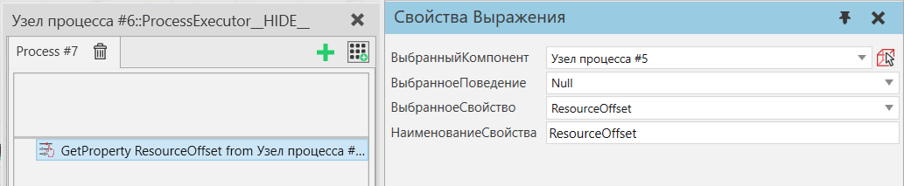

|
Оператор Получить свойство используется для доступа к любому свойству статического компонента или его свойству поведения в макете (включая компонент self/owner).
Примечание: Только Целые, Вещественные, Векторы, Матрица и Строковые типы свойств поддерживаются.

Свойства
Название
|
Описание
|
ВыбранныйКомпонент
|
Исходный компонент, из которого считываются свойства.
|
ВыбранноеПоведение
|
Список поведений в Выбранный компонент. Выберите поведение, чтобы выбрать его свойство, в противном случае выберите Null.
|
ВыбранноеСвойство
|
Если Выбранное поведение является Null, список показывает свойства компонентов Выбранный компонент.
В противном случае перечисленные свойства принадлежат Выбранное поведение.
|
НаименованиеСвойства
|
Наименование переменной свойства, которое можно использовать в других операторах.
|
|